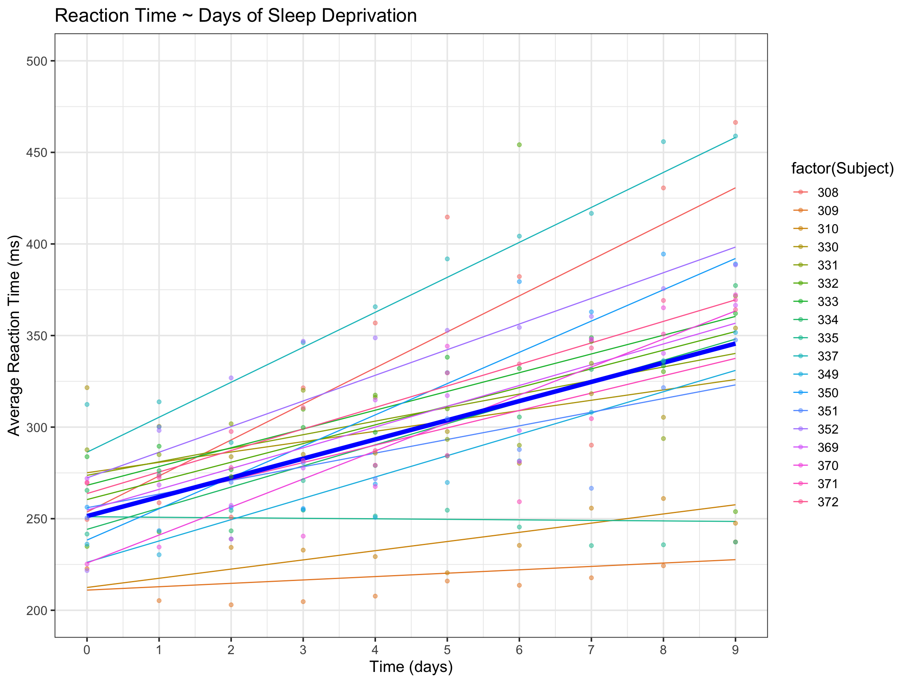

This week we are continuing our series on predicting and visualising models in R by focussing on linear mixed models (LMM’s). Like GLM’s, the fundamentals of the process remain the same bar a few tweaks specific to LMM’s that you need to be aware of. Here we are back to dealing with a continuous covariate and outcome - the new development to note is the distinction between fixed and random effects and how to handle each appropriately in the predict() function.
1 Predicting
To illustrate these ideas we’ll revisit the sleepstudy dataset which is available in the lme4 package (I have used this for a similar purpose in one of my previous posts). The sleepstudy data looks at reaction times over time in sleep-deprived individuals. For the sake of the exercise we will fit a mixed model with reaction time (ms) as the outcome, time (days) as a fixed-effect and time (days) and individual as random-effects. So this is a random slopes model allowing the ‘effect’ of sleep-deprivation on reaction time to vary over time for each individual. We fit the model and view a few lines of the dataframe which now contains the fixed (mod_pred_fix) and random (mod_pred_ran) predictions. Obtaining the predictions is very easy - we create the two new variables by simply calling:
predict(mod) for the random-effects, and:
predict(mod, re.form = NA) for the fixed-effects.
Note the re.form = NA sets all random-effects to 0.
So, mod_pred_fix represents the group-averaged prediction of reaction time (outcome) as a function of time (covariate) and similarly mod_pred_ran represents the individual predictions of the same.
2 One-Plot Visualisation
Plotting the results is then quite straightforward with ggplot2:
Code
# Plot all datasleepstudy |>ggplot(aes(x = Days, y = Reaction, color =factor(Subject))) +geom_line(aes(x = Days, y = mod_pred_ran)) +geom_line(aes(x = Days, y = mod_pred_fix), linewidth =2, color ="blue") +scale_y_continuous(limits =c(200, 500), breaks =seq(200, 500, by =50)) +scale_x_continuous(limits =c(0, 9), breaks =seq(0, 9, by =1)) +geom_point(alpha =0.5) +labs(title ="Reaction Time ~ Days of Sleep Deprivation") +xlab("Time (days)") +ylab("Average Reaction Time (ms)") +theme_bw(base_size =15)

3 Multi-Plot Visualisation
The above plot is good for showing all the data at once, but can get a little bit confusing if you are interested in looking more closely at any specific individual trajectories. If that is in fact the case, an alternative plot representation is to facet on individuals, like so:
Code
# Plot - facet on individualsleepstudy |>ggplot(aes(x = Days, y = Reaction)) +geom_line(aes(x = Days, y = mod_pred_ran), linewidth =1, color ="green") +geom_line(aes(x = Days, y = mod_pred_fix), linewidth =1, color ="blue") +scale_y_continuous(limits =c(200, 500), breaks =seq(200, 500, by =100)) +scale_x_continuous(limits =c(0, 9), breaks =seq(0, 9, by =2)) +geom_point(alpha =0.5) +facet_wrap(~Subject) +labs(x ="Time (Days)",y ="Average Reaction Time (ms)",title ="Reaction Time ~ Days of Sleep Deprivation",subtitle ="Blue = Fixed Effects Prediction | Green = Random Effects Prediction") +theme_bw(base_size =15)
It’s now much easier to see the individual trajectories and how they compare to that of the group average.
4 Some Background Stuff
While not essential to producing a visualisation of the model predictions, taking a little detour to understand in more detail how we actually arrived at the fixed- and random-effect predictions is a worthwhile exercise and one which can aid in building your mixed-modelling intuition.
Let’s first inspect an unprettified summary of the model output:
Code
summary(mod)
Linear mixed model fit by REML ['lmerMod']
Formula: Reaction ~ Days + (Days | Subject)
Data: sleepstudy
REML criterion at convergence: 1743.6
Scaled residuals:
Min 1Q Median 3Q Max
-3.9536 -0.4634 0.0231 0.4634 5.1793
Random effects:
Groups Name Variance Std.Dev. Corr
Subject (Intercept) 612.10 24.741
Days 35.07 5.922 0.07
Residual 654.94 25.592
Number of obs: 180, groups: Subject, 18
Fixed effects:
Estimate Std. Error t value
(Intercept) 251.405 6.825 36.838
Days 10.467 1.546 6.771
Correlation of Fixed Effects:
(Intr)
Days -0.138
We obtain the fixed-effects as an Intercept and a coefficient for time (Days) and we can interpret that as an average reaction time of 251.4 ms at baseline and an average increase of 10.5 ms in reaction time for the passing of each day. Note that the random-effects are not as easily interpretable in their reported form which is an estimate of the variance of the distribution of individual reaction times, not average differences as for fixed-effects.
A shortcut to obtain the fixed-effects of an lmer class model in R is:
So what do the random-effects actually tell us? In a nutshell, these represent the individual differences from the fixed-effects values.
Let’s consider Subject 308 as an example to illustrate this. If we are interested in the predicted baseline reaction time for this individual, all we need to do is add the fixed- and random-effects intercepts values - 251.405 + 2.259 = 253.664 ms (we can ignore the time ‘effect’ which is 0 by definition at baseline). By comparison, we can also easily obtain that predicted value with the following code:
It’s a little bit more complex to manually calculate the predicted value at any other time point because the ‘effect’ of time is no longer ignorable and we just need to remember the basics of our regression equation. Say, we want to calculate the reaction time for Subject 308 at 5 days. A simple way to do this is to first work out the fixed-effect prediction at 5 days and then add the random-effect prediction to it.
The fixed-effect prediction is just the intercept value plus the coefficient for time multiplied by the number of days (either from the model summary or from fixef()). In numbers: 251.405 + (10.467 * 5) = 303.74. This gives the predicted group-average reaction time at 5 days.
The random-effect prediction is the same but from ranef() and specific to the individual. In numbers: 2.259 + (9.198 * 5) = 48.249. This gives the additional (to the group-average) reaction time specific to the individual.
We can then add those two values to obtain the predicted reaction time for Subject 308 at 5 days - i.e. 303.74 + 48.249 = 351.989. If you don’t want to manually calculate this, then you can use:
Which is essentially the same, bar rounding error.
And that brings us to the end of this post. Hopefully that gives you some idea as to how random effects and their predictions are calculated. In the next post, we will finish our series on model prediction and visualisation be taking a look at the Cox model. Until then…
Source Code
---title: "Model Prediction/Visualisation <br> 5. Linear Mixed Models (LMMs)"date: 2025-05-30categories: [code, concept, modelling, visualisation]# image: "images/plot.png"description: "Visualising fixed vs random effects."---This week we are continuing our series on predicting and visualising models in `R` by focussing on linear mixed models (LMM's). Like GLM's, the fundamentals of the process remain the same bar a few tweaks specific to LMM's that you need to be aware of. Here we are back to dealing with a continuous covariate and outcome - the new development to note is the distinction between [fixed and random effects](https://www.theanalysisfactor.com/specifying-fixed-and-random-factors-in-mixed-models/) and how to handle each appropriately in the `predict()` function.# PredictingTo illustrate these ideas we'll revisit the `sleepstudy` dataset which is available in the `lme4` package (I have used this for a similar purpose in one of my [previous posts](https://msni-stats-tips.netlify.app/posts/004_02feb_2024/)). The `sleepstudy` data looks at reaction times over time in sleep-deprived individuals. For the sake of the exercise we will fit a mixed model with reaction time (ms) as the outcome, time (days) as a fixed-effect and time (days) and individual as random-effects. So this is a random slopes model allowing the 'effect' of sleep-deprivation on reaction time to vary over time for each individual. We fit the model and view a few lines of the dataframe which now contains the fixed (`mod_pred_fix`) and random (`mod_pred_ran`) predictions. Obtaining the predictions is very easy - we create the two new variables by simply calling:`predict(mod)` for the random-effects, and:`predict(mod, re.form = NA)` for the fixed-effects.Note the `re.form = NA` sets all random-effects to `0`.```{r}#| message: falselibrary(lme4)library(ggplot2)library(gtsummary)library(kableExtra)# Load datadata("sleepstudy")# Modelmod <-lmer(Reaction ~ Days + (Days | Subject), data = sleepstudy)# Predictsleepstudy$mod_pred_fix <-predict(mod, re.form =NA) # predict fixed effectssleepstudy$mod_pred_ran <-predict(mod) # predict random effects# View datahead(sleepstudy, 10) |>kable(align ="c", digits =2)```<br>So, `mod_pred_fix` represents the **group-averaged** prediction of `reaction time` (outcome) as a function of time (covariate) and similarly `mod_pred_ran` represents the **individual** predictions of the same.# One-Plot VisualisationPlotting the results is then quite straightforward with `ggplot2`:```{r}#| message: false#| warning: false# Plot all datasleepstudy |>ggplot(aes(x = Days, y = Reaction, color =factor(Subject))) +geom_line(aes(x = Days, y = mod_pred_ran)) +geom_line(aes(x = Days, y = mod_pred_fix), linewidth =2, color ="blue") +scale_y_continuous(limits =c(200, 500), breaks =seq(200, 500, by =50)) +scale_x_continuous(limits =c(0, 9), breaks =seq(0, 9, by =1)) +geom_point(alpha =0.5) +labs(title ="Reaction Time ~ Days of Sleep Deprivation") +xlab("Time (days)") +ylab("Average Reaction Time (ms)") +theme_bw(base_size =15)```# Multi-Plot VisualisationThe above plot is good for showing all the data at once, but can get a little bit confusing if you are interested in looking more closely at any specific individual trajectories. If that is in fact the case, an alternative plot representation is to facet on individuals, like so:```{r}#| message: false#| warning: false# Plot - facet on individualsleepstudy |>ggplot(aes(x = Days, y = Reaction)) +geom_line(aes(x = Days, y = mod_pred_ran), linewidth =1, color ="green") +geom_line(aes(x = Days, y = mod_pred_fix), linewidth =1, color ="blue") +scale_y_continuous(limits =c(200, 500), breaks =seq(200, 500, by =100)) +scale_x_continuous(limits =c(0, 9), breaks =seq(0, 9, by =2)) +geom_point(alpha =0.5) +facet_wrap(~Subject) +labs(x ="Time (Days)",y ="Average Reaction Time (ms)",title ="Reaction Time ~ Days of Sleep Deprivation",subtitle ="Blue = Fixed Effects Prediction | Green = Random Effects Prediction") +theme_bw(base_size =15)```It's now much easier to see the individual trajectories and how they compare to that of the group average.# Some Background StuffWhile not essential to producing a visualisation of the model predictions, taking a little detour to understand in more detail how we actually arrived at the fixed- and random-effect predictions is a worthwhile exercise and one which can aid in building your mixed-modelling intuition.Let's first inspect an unprettified summary of the model output:```{r}summary(mod)```We obtain the fixed-effects as an `Intercept` and a coefficient for time (`Days`) and we can interpret that as an average reaction time of `251.4 ms` at baseline and an average increase of `10.5 ms` in reaction time for the passing of each day. Note that the random-effects are not as easily interpretable in their reported form which is an estimate of the variance of the distribution of individual reaction times, not average differences as for fixed-effects.A shortcut to obtain the fixed-effects of an `lmer` class model in `R` is:`fixef(mod)````{r}fixef(mod)```and similarly for the random-effects:`ranef(mod)````{r}ranef(mod)```So what do the random-effects actually tell us? In a nutshell, these represent the individual differences from the fixed-effects values.Let's consider `Subject 308` as an example to illustrate this. If we are interested in the predicted baseline reaction time for this individual, all we need to do is add the fixed- and random-effects intercepts values - `251.405 + 2.259 = 253.664` ms (we can ignore the time 'effect' which is `0` by definition at baseline). By comparison, we can also easily obtain that predicted value with the following code:`predict(mod, newdata = data.frame(days = 0, Subject = 308), re.form = ~(Days|Subject))````{r}predict(mod, newdata =data.frame(Days =0, Subject =308), re.form =~(Days|Subject))```It's a little bit more complex to manually calculate the predicted value at any other time point because the 'effect' of time is no longer ignorable and we just need to remember the basics of our regression equation. Say, we want to calculate the reaction time for `Subject 308` at `5` days. A simple way to do this is to first work out the fixed-effect prediction at `5` days and then add the random-effect prediction to it.The fixed-effect prediction is just the intercept value plus the coefficient for time multiplied by the number of days (either from the model summary or from `fixef()`). In numbers: `251.405 + (10.467 * 5) = 303.74`. This gives the predicted group-average reaction time at `5` days.The random-effect prediction is the same but from `ranef()` and specific to the individual. In numbers: `2.259 + (9.198 * 5) = 48.249`. This gives the **additional** (to the group-average) reaction time specific to the individual.We can then add those two values to obtain the predicted reaction time for `Subject 308` at `5` days - i.e. `303.74 + 48.249 = 351.989`. If you don't want to manually calculate this, then you can use:`predict(mod, newdata = data.frame(days = 5, Subject = 308), re.form = ~(Days|Subject))````{r}predict(mod, newdata =data.frame(Days =5, Subject =308), re.form =~(Days|Subject))```Which is essentially the same, bar rounding error.And that brings us to the end of this post. Hopefully that gives you some idea as to how random effects and their predictions are calculated. In the next post, we will finish our series on model prediction and visualisation be taking a look at the Cox model. Until then...